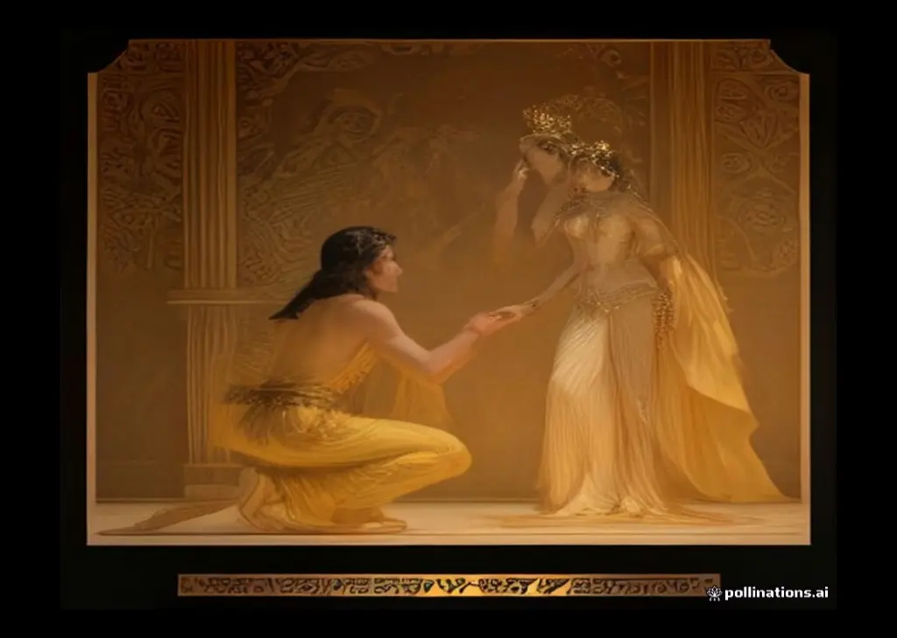
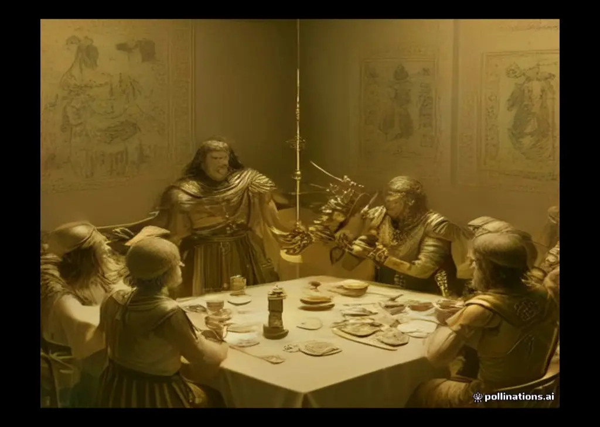
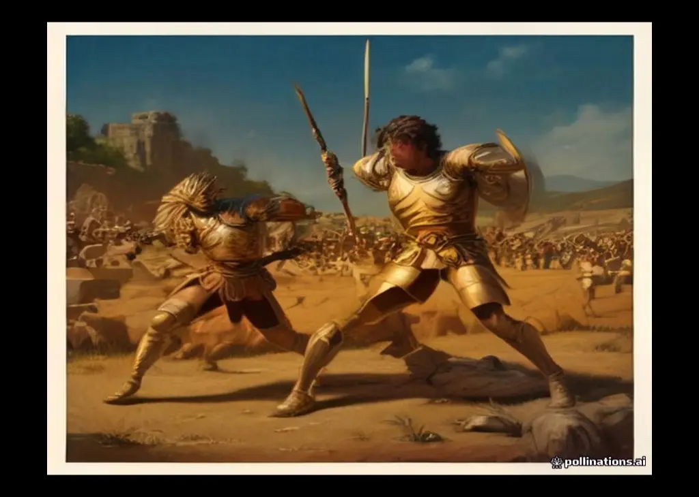
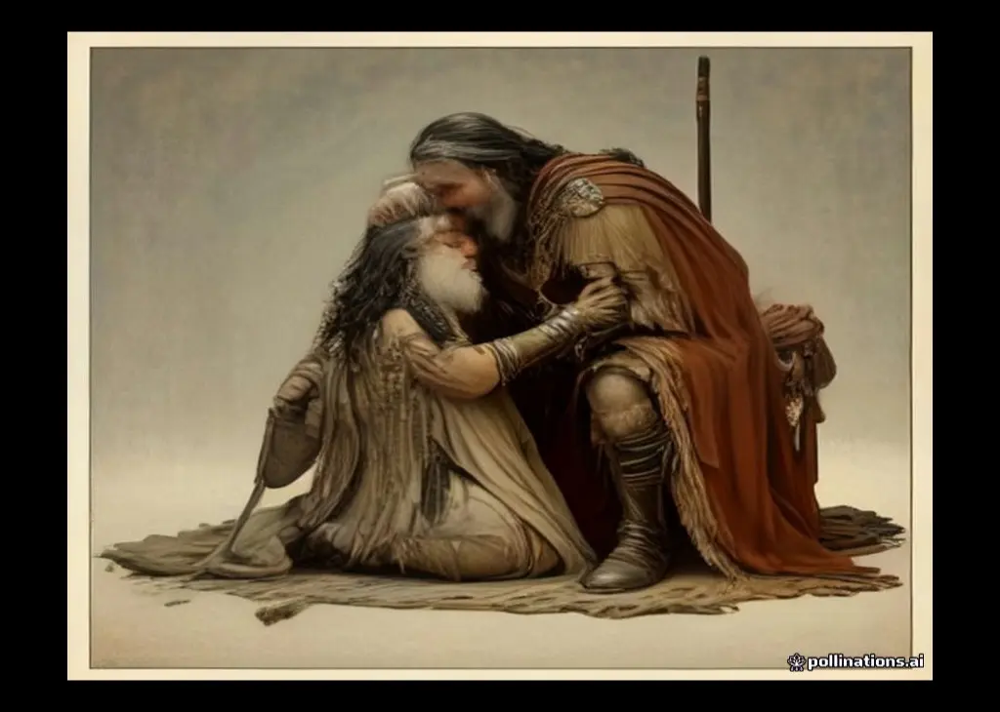
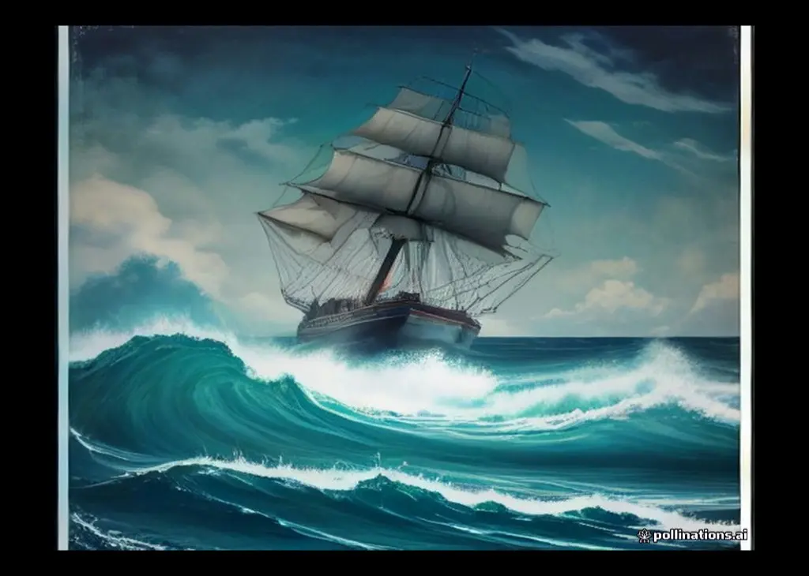

序曲 · 金苹果之争



宙斯没有忘记对忒提斯的承诺。当夜他遣一个"梦神"降到熟睡的阿伽门农枕边，假传神意：即刻出兵，明日便可攻陷特洛伊——因为诸神已经不再偏袒这座城。阿伽门农醒来深信不疑，全然不知这是个把他往深渊里引的假梦。
两军逼近，气氛肃杀。特洛伊一方突然提议：何必十年血战？让祸根自己了断——帕里斯与墨涅拉俄斯单挑，胜者带走海伦与全部财宝，两军盟誓休战。这提议得到应允，老年特洛伊王普里阿摩斯亲自出城主持盟誓。
奥林匹斯山上，宙斯与赫拉斗起了嘴。宙斯说：干脆讲和，海伦归希腊，特洛伊城留给你——总行了吧？赫拉恼怒地拒绝：我才不要一座将亡之城的施舍！在她心里，特洛伊早就该毁灭。宙斯于是顺水推舟：那就打下去——只是别怪我的雅典娜上阵去激起战端。
这一卷属于狄俄墨得斯——阿尔戈斯年轻的国王。雅典娜把勇气与力量灌进他的身体，又为他拨开眼前的迷雾，让他能认出下场的神祇：她叮嘱他，凡人的血肉尽管杀，不朽的神明则要避开，唯有一个例外。
战局胶着。狄俄墨得斯与吕基亚名将格劳科斯阵前相遇，互通姓名后发现：两家祖上是世交——祖父曾在阿尔戈斯款待过对方的祖父。两人当场掷枪为誓，交换了铠甲（因此后人笑说"宙斯夺走了格劳科斯的理智"——金甲换铜甲，亏大了），各自退开，不与对方兵刃相向。
特洛伊人重整旗鼓。先知赫勒诺斯灵光一现：何不让阵中最勇的赫克托耳向希腊人叫阵单挑？赫克托耳当即到两军阵前朗声喊话：我是普里阿摩斯之子赫克托耳！哪位希腊英雄敢与我单独对阵？胜者得尽战利，败者的遗体由本方安葬。全场寂静，无人应声——唯独墨涅拉俄斯挺身而起，被兄长阿伽门农按住：为一个帕里斯再赔上一个你？
翌日拂晓，宙斯召集众神立下严令：谁也不许插手今日之战，违者打入地狱。他自己登上伊达山巅，黄金天平两端各放特洛伊与希腊的命运砝码——希腊的一端沉向大地。天平一倾，他的雷霆劈在希腊军阵中央，天地变色。
三位使者来到阿喀琉斯营中。他正在弹琴低唱英雄往事，见到老友起身相迎——哪怕在盛怒之中，他也以礼相待。宴罢，奥德修斯陈说军情：特洛伊人已逼到船边，希腊人的存亡系于英雄一身；随后他转述阿伽门农的道歉与厚礼——七城、女俘、金银，直至布里塞伊斯本人，还有战后共分战利、结为姻亲的许诺。
（研究者认为本卷为后人补入，但故事自成一体，且颇为精彩。）
破晓，宙斯把"争斗"女神放到希腊人的战船上，自己登上伊达山观战。白日之战异常惨烈：阿伽门农一马当先，连斩特洛伊名将，杀得敌军直退到城墙下——凡人在盛怒之下的爆发，几乎赶上了神明。但他的巅峰注定短暂：长矛伤臂、箭镞中腿，又中了枪，他被迫退出战场。
特洛伊人冲到壕沟前。这道壕沟既深且宽，沟上壁垒直插尖桩，战马难以跨越。天象也在帮特洛伊：波塞冬远在色萨利，宙斯亲手推波助澜——萨佩冬（宙斯与凡女之子，吕基亚王）对格劳科斯说出了全诗最豪迈的话：你我为何受人尊崇、坐拥良田美眷？因为我们必须站在最前列！人终有一死，不如在荣耀中战死。说罢两人率吕基亚人顶着箭雨扑向壁垒。
宙斯的目光暂时转向了别处。海神波塞冬抓住这个空档，化作老先知卡尔卡斯的样子，出现在阵中——他是阿伽门农的兄长辈，海之君主，岂能眼睁睁看着弟弟们的船被烧？他重振两名埃阿斯的士气，又奔赴各处激励将领，希腊人的阵线奇迹般地稳住了。
阿伽门农带伤来到船边，彻底灰心了：撤吧，把船拖下水，趁夜逃回希腊！这话让奥德修斯瞪圆了眼：让全军听听这话，他们立刻就造反——统帅说出这种丧气话，成何体统！老将涅斯托尔折中：船来不及下水，先退守船营死战。众人应允，各自回阵。
宙斯一觉醒来，看穿了妻子的把戏。他把赫拉训斥一番，又强行让伊里斯传令：波塞冬立刻退出战场。海神不服，与侄子顶撞了几句"你管得着吗"，但终究不愿兄弟阋墙，怏怏离阵。他留下狠话：若城破之日我的庙宇被焚，你我新账旧账一起算。

帕特洛克罗斯的遗体成了新的战场焦点。赫克托耳剥下那副阿喀琉斯的甲胄披挂上身——宙斯在云端摇头叹息：你穿上它，死期也不远了。墨涅拉俄斯在尸边挺矛死守，如一头护犊的母牛；埃阿斯赶到，两人背靠背立成一座铜墙铁壁。赫克托耳几次扑上来，都被顶了回去。
噩耗传来，阿喀琉斯扑倒在地，抓起灰土撒向头脸，瘫在尘埃里，长长的悲鸣声穿过了壕沟，直震两军阵线。母亲忒提斯从海底赶来，抱住儿子的头。他说出了那句话：挚友死了，我杀死了他；我曾当众说过不再参战，如今我唯一想要的，是亲手杀死赫克托耳。忒提斯泪如雨下：儿啊，你杀他之后，自己的死期也到了。阿喀琉斯回答：那就让我立刻死去！
黎明前，忒提斯把新甲送到，阿喀琉斯披挂上正。他召集全军，当众宣布：我放下怒气，重回战场——战争等不了人。阿伽门农起身"道歉"，却说了一句经典甩锅："是神让我一时发昏，宙斯和阿特丢失的怨火最难消退。"他抬出满车礼物，包括原样送回的布里塞伊斯，并指神起誓：自己从未染指她。
宙斯终于解禁：众神随意下场，各自帮衬一方——免得阿喀琉斯违逆命运、提前攻陷特洛伊。奥林匹斯山顿时空了一半：雅典娜、赫拉、波塞冬、赫尔墨斯、赫菲斯托斯为希腊而战；阿瑞斯、阿波罗、阿佛洛狄忒、阿尔忒弥斯、勒托与河神珊托斯特洛伊而战。
特洛伊人溃败，分成两路逃命。一路逃进城去，普里阿摩斯下令紧闭城门，任凭城外的人哭嚎，一条命换全城的命；另一路被赶进斯卡曼德河中。阿喀琉斯跳进水里，用长矛点名：抓住特洛伊人的儿子！他生擒十二名青年，留作帕特洛克罗斯葬礼上的祭品；又亲手杀死前来求饶的吕卡翁——王子赤身从河里爬出来抱住他的膝，他冷冷地回答：帕特洛克罗斯死了，你就别想活。河里漂满了尸体。
当晚，密尔弥多纳人护送帕特洛克罗斯的遗体回到营中。阿喀琉斯把杀人复仇的怒火按下，与全军一起哀悼挚友：灵床边供上剪下的鬃发、涂满蜂蜜与油脂的羊牛，又在火堆上杀马、杀犬、杀那十二名特洛伊青年——青铜时代的葬礼，残酷而虔诚。深夜，阿喀琉斯搂着遗体痛哭，恍惚间看见挚友的魂魄立在床头：快些火化我，让我渡过冥河；我们还要在同一场战事里再见——不，那不是重逢。


特洛伊陷落后第十年，一切都已尘埃落定，唯独奥德修斯杳无音信。此刻他正被扣在世界尽头的俄古癸亚岛上——女神卡吕普索许他长生不老，留他做丈夫，而故国伊萨卡的王宫里，一百多名求婚者正赖着不走：白吃他的牛羊，逼他妻子改嫁，吵闹声能传到天上。
次日，忒勒马科斯召集民众大会——自奥德修斯出海以来，伊萨卡二十年没有开过大会。他首次公开控诉：求婚者糟蹋家产，纠缠母亲，请你们主持公道！求婚者头目安提诺俄斯反唇相讥：错在你母亲！她用织寿衣的把戏拖了我们三年——白天织，夜里拆，直到被叛仆告发。要么让她回娘家，要么指给她嫁谁。老先知哈尔忒瑞斯则透露了一条不祥的消息：奥德修斯或许正被困在海岛上，回家难了。
船到皮洛斯，涅斯托尔正在海滩上主持一场盛大的公祭：九排坐席、九十头牛，献与海神。来客受到礼遇，忒勒马科斯道明来意：我想打听父亲的消息。